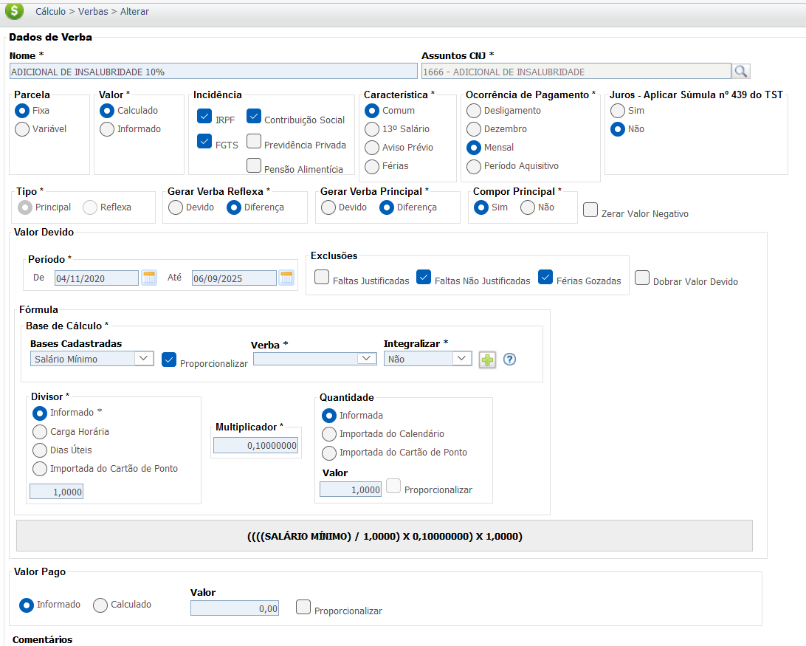

Adicional de Insalubridade
O adicional de insalubridade é uma compensação financeira devida ao empregado que trabalha em condições consideradas insalubres, ou seja, exposto a agentes nocivos à saúde acima dos limites de tolerância previstos em lei. Esse adicional visa remunerar o tempo em que o trabalhador esteve exposto a esses riscos.
Atividades e Agentes Insalubres e Seus Graus
A avaliação no local de trabalho para medir e analisar as condições reais de insalubridade, bem como a classificação do grau de risco deve feita por meio de perícia técnica.
A Norma Regulamentadora nº 15 (NR 15) do Ministério do Trabalho é a principal fonte para identificar as atividades e agentes que podem ser considerados insalubres. O grau de insalubridade, que define o percentual do adicional, varia de acordo com o tipo de agente, podendo ser de 10%, 20% ou 40%.
Confira na tabela abaixo alguns exemplos de atividades e agentes considerados insalubres, de acordo com o seu grau.
| Agente de Risco / Atividade | Grau de Insalubridade |
|---|---|
| Ruído Contínuo ou Intermitente | Grau Médio (20%) |
| Ruído de Impacto | Grau Médio (20%) |
| Calor (ambientes com sobrecarga térmica) | Grau Médio (20%) |
| Radiações Ionizantes (Raio X, substâncias radioativas) | Grau Máximo (40%) |
| Vibrações | Grau Médio (20%) |
| Frio | Grau Médio (20%) |
| Umidade | Grau Médio (20%) |
| Agentes Químicos (Ex: Cromo, Arsênico, Chumbo, Fósforo) | Varia de acordo com o agente, podendo ser Médio ou Máximo (20% ou 40%) |
| Agentes Químicos (Ex: Benzeno, Carvão mineral, Silicatos) | Varia de acordo com o agente, podendo ser Mínimo, Médio ou Máximo (10%, 20% ou 40%) |
| Trabalho em contato com esgotos (galerias e tanques) | Grau Máximo (40%) |
| Contato com lixo urbano (coleta e industrialização) | Grau Máximo (40%) |
| Contato permanente com pacientes ou animais em isolamento | Grau Máximo (40%) |
| Trabalho com resíduos hospitalares | Grau Máximo (40%) |
Base Legal e Jurisprudência
O direito ao recebimento do Adicional de Insalubridade tem por base a legislação e os entendimentos a seguir:
Fontes Normativas
Consolidação das Leis do Trabalho (CLT):
- Art. 189:
Define o que são atividades ou operações insalubres.
- Art. 190:
Determina que o Ministério do Trabalho e Emprego, por meio de normas, defina as atividades e os agentes insalubres.
- Art. 192:
Define os percentuais do adicional de insalubridade (40%, 20% e 10%), calculados sobre o salário mínimo da região.
Norma Regulamentadora nº 15 (NR 15):
- Regulamentação e Agentes Insalubres:
É a norma técnica que detalha os agentes insalubres e seus respectivos limites de tolerância. É nela que o perito, em um processo judicial, se baseia para verificar se o ambiente de trabalho é, de fato, insalubre.
Jurisprudência Consolidada
A principal controvérsia judicial reside na base de cálculo do adicional, já que a CLT e a Constituição Federal entram em conflito. Decisões dos tribunais, especialmente do TST e STF, ajudam a definir a base de cálculo a ser aplicada.
Súmula Vinculante 4 do STF
Tese:
Proibiu o uso do salário-mínimo como base de cálculo.
Súmula 228 do TST
Tese:
O TST tentou definir o salário-base como substituto, mas o STF suspendeu essa decisão. Atualmente, a base de cálculo continua sendo o salário-mínimo de forma provisória, por ausência de uma alternativa legal.
Salário Profissional (OJ nº 17 da SDI-1 do TST)
Tese:
Estabelece que, se houver um salário profissional para a categoria, o adicional de insalubridade deve ser calculado sobre essa base, prevalecendo sobre o salário mínimo.
Base de Cálculo e Deduções
Base de Cálculo
Até edição de lei que especifique, a base de cálculo do adicional de insalubridade é o salário mínimo, salvo se houver acordo ou convenção coletiva que estipule uma base de cálculo mais favorável. A insalubridade de grau mínimo (10%) é aplicável a situações de exposição moderada, a de grau médio (20%) para exposição significativa, e a de grau máximo (40%) para exposição a agentes extremamente nocivos.
Exemplo:
- Grau Mínimo (10%): R$ 1.500,00 x 0,10 = R$ 150,00
- Grau Médio (20%): R$ 1.500,00 x 0,20 = R$ 300,00
- Grau Máximo (40%): R$ 1.500,00 x 0,40 = R$ 600,00
O cálculo acima deve ser usado como referência. O valor exato pode variar dependendo do salário mínimo vigente e da base de cálculo definida por norma coletiva.
Deduções
Sobre o valor do adicional de insalubridade incidem as deduções legais, como a contribuição para o INSS (Instituto Nacional do Seguro Social) e o Imposto de Renda (IRPF). Essas deduções são aplicadas de acordo com as tabelas progressivas vigentes, sendo calculadas sobre o valor total da remuneração, que inclui o salário base e o adicional.
Exemplo de Deduções (INSS e IR):
Vamos considerar um salário-base de R$ 2.000,00 e um adicional de insalubridade de R$ 300,00 (grau médio de 20% sobre R$ 1.500,00).
- Remuneração total: R$ 2.000,00 + R$ 300,00 = R$ 2.300,00
- Dedução de INSS: Com base na tabela progressiva, a alíquota de INSS para essa faixa de remuneração é de, por exemplo, 11%. O valor a ser descontado seria: R$ 2.300,00 x 0,11 = R$ 253,00.
- Base de cálculo para IRPF: A base de cálculo do Imposto de Renda é a remuneração total menos a dedução do INSS: R$ 2.300,00 - R$ 253,00 = R$ 2.047,00.
- Dedução de IRPF: Se a alíquota para essa faixa de renda for de, por exemplo, 7,5%, e a parcela a deduzir for de R$ 158,40 (valor hipotético da tabela progressiva), o cálculo do IR será: (R$ 2.047,00 x 0,075) - R$ 158,40 = R$ 153,52 - R$ 158,40 = R$ -4,88. Neste caso hipotético, o valor seria R$ 0,00, pois não há imposto a pagar.
É importante ressaltar que as alíquotas e as faixas de dedução do INSS e do IRPF mudam periodicamente. O exemplo acima é apenas uma simulação.
Verbas Reflexas
O Adicional de Insalubridade, por possuir **natureza salarial** (Art. 192 da CLT e Súmula 139 do TST), integra a remuneração para todos os efeitos legais, gerando reflexos nas verbas abaixo. O adicional deverá ser pago proporcionalmente aos meses em que o empregado esteve exposto ao agente insalubre.
O cálculo dos reflexos é feito pela média (se houver variação de grau) ou pelo valor integral do adicional devido no mês de apuração da verba.
| Verba Trabalhista | Reflexo do Adicional de Insalubridade |
|---|---|
| 13º Salário | Integra o cálculo do 13º Salário (integral e proporcional) pela média duodecimal dos valores do adicional pagos no ano. |
| Férias + 1/3 | Integra o cálculo das Férias (vencidas e proporcionais) e o adicional de 1/3 pela média do período aquisitivo. |
| Aviso Prévio | Integra a base de remuneração para cálculo do Aviso Prévio (trabalhado ou indenizado) pela média dos últimos 12 meses. |
| FGTS (Depósito Mensal e Multa) | Incide sobre o valor do adicional, compondo a base de cálculo para o depósito mensal de 8% e para a Multa de 40%. |
| Horas Extras | Integra o salário-hora para fins de cálculo de Horas Extras, aumentando o valor da hora normal (Súmula 264 do TST). |
Importante: Se for constatada a eliminação da insalubridade por fornecimento e uso de Equipamentos de Proteção Individual (EPIs), o adicional deixa de ser devido, e, consequentemente, não há reflexos.
Calculadora (Simulação)
Use a calculadora abaixo para estimar o valor do adicional de insalubridade com base no salário mínimo vigente e no grau de exposição.
Lançamento no PJe-Calc
A seguir, confira o passo a passo para o lançamento da verba no PJe-Calc, utilizando a opção "Expresso":
-
Acessar Verbas e Escolher Lançamento: No menu de
navegação à esquerda, clique na opção Verbas para iniciar o lançamento. Após o
comando,
será exibida a tela para escolha do Lançamento da Verba. Escolha a opção Expresso.

- Seleção da Verba: O sistema abrirá as opções de verbas, escolha a verba Adicional de Insalubridade % e clique no botão Salvar
-
Quadro de Verbas e Ações: O sistema exibirá um quadro
com os campos:
- Ações - contendo as opções de configurações da verba selecionada (parâmetros,
ocorrências e
exclusão)

-
- Parâmetros da Verba

-
- Ocorrências da Verba

-
- Excluir

- Verba Principal - verba selecionada para lançamento.
- Verba Reflexa - em que ao clicar no botão Exibir serão listadas todas as verbas reflexas ligadas a Verba Principal.
- Parametrização da Verba: Ao clicar no botão Parâmetros da Verba serão exibidas todas as configurações necessárias para a parametrização da Verba Principal. 
- Registro de Ocorrências: Ao clicar no botão Ocorrências da Verba serão exibidas todas as configurações necessárias para registro das ocorrências da Verba Principal.